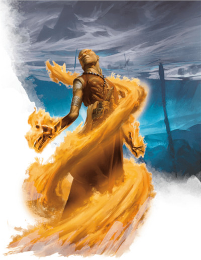
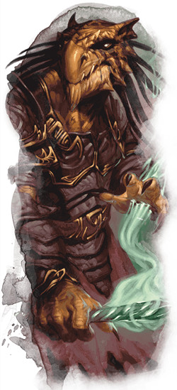

L'ensorceleur D&D 5 pour les nuls
Vous êtes un ensorceleur. La magie coule dans vos veines et vous seul avez le pouvoir de la contrôler. Vous êtes né avec ce pouvoir, même si vous ne l'avez découvert que récemment. Cela s'est peut-être manifesté lorsque vous étiez en colère (des étincelles se mettant à voler du bout de vos doigts) ou lors d'une grande peur (vous sembliez vous fondre dans l'ombre). Quoi qu'il en soit, la magie en vous est vivante et peut être venue de n'importe où. Certains ensorceleurs doivent leur magie à un puissant ancêtre, comme un dragon, un céleste ou un djinn. Pour d'autres, elle provient d'une source extraplanaire, comme de la Gisombre ou du chaos des Limbes.
L'ensorceleur est une excellente classe pour les joueurs qui veulent lancer des sorts et manipuler les règles de la magie. Mais pour libérer le véritable potentiel de cette classe, il est recommandé d'avoir une solide connaissance des règles de D&D en général, et des règles d'incantations en particulier. Les ensorceleurs vont en effet encore plus loin en utilisant la métamagie pour modifier les règles d'incantations et manipuler les lois de la magie en leur faveur. Les classes qui lancent des sorts, comme les ensorceleurs, les magiciens et les bardes, sont généralement plus complexes que leurs homologues non magiques, comme les barbares, les guerriers et les moines. Toutefois, si vous voulez jouer un personnage qui étend les lois de la magie par sa force de volonté, alors bienvenue ! L'ensorceleur détient le pouvoir que vous recherchez.
Le plus important lorsqu'on joue un personnage à D&D est de le jouer de manière amusante pour vous et vos amis. Mais dans le cas d'un ensorceleur, il existe tout de même certaines bases à connaître pour le jouer efficacement. D&D est un jeu où plusieurs personnages aux capacités diverses contribuent au succès de leur équipe de différentes manières. Vous devez donc savoir comment jouer efficacement votre rôle au sein du groupe afin d'avancer dans l'histoire de la campagne tout en développant votre propre histoire. Cette aide de jeu va donc vous présenter les bases de l'ensorceleur sur les 5 premiers niveaux.
Créer votre ensorceleur
Sans aller jusqu'à parler d'optimisation, la première étape pour bien jouer votre classe est de construire votre personnage efficacement.
- Choisissez votre race. N'importe laquelle peut faire un bon ensorceleur, mais préférez celles qui améliorent votre valeur de Charisme. Le Charisme est votre caractéristique la plus importante car c'est elle qui détermine la puissance de vos sorts. Les tieffelins sont d'excellents ensorceleurs en raison de leur bonus naturel de +2 en Charisme. Leur ascendance infernale leur octroie quelques sorts supplémentaires qu'ils peuvent utiliser une fois par jour, ce qui vous donne quelques chances supplémentaires de les utiliser tout au long de la journée. Jouer un tieffelin vous confère également la résistance au feu, ce qui est généralement utile, mais peut être redondant si vous jouez un ensorceleur de la lignée draconique. Les demi-elfes gagnent également un bonus inné de +2 en Charisme, et leurs traits Ascendance féerique et Polyvalence sont des bonus utiles à tous. Mais de nombreuses autres races ont un bonus de +1 en Charisme et font également de fantastiques ensorceleurs. Il est logique qu'un drakéide soit un ensorceleur de la lignée draconique, même si le fait que ses résistances aux dégâts se superposent puisse causer une certaine frustration. Et, bien sûr, les humains sont toujours un bon choix pour toute classe grâce à leur incroyable polyvalence.
Quel type d'ensorceleur ?
Avec d'autres classes de lanceur de sorts comme le barde, le clerc et le magicien, l'ensorceleur est l'une des classes les plus complexes et les plus riches de D&D, grâce à la grande variété de sorts que vous aurez à choisir pour construire l'arsenal de votre personnage. Vous choisirez également une origine magique (aussi appelées sous-classes) qui vous donnera un ensemble d'outils supplémentaires pour compléter les pouvoirs de votre personnage.
Ce choix de votre sous-classe et votre sélection de sorts définiront votre contribution au groupe. Voulez-vous jouer un rôle offensif en utilisant de puissants sorts et en détruisant vos adversaires ? Ou voulez-vous vous concentrer sur un rôle défensif plus équilibré en utilisant des protections magiques pour vous garder en vie tout en usant vos ennemis ? Ou préférez-vous agir en soutien en utilisant la magie pour guérir et contrôler le champ de bataille en renforçant la puissance de vos alliés ?
Sachez toutefois que la quantité limitée de sorts connus des ensorceleurs peut limiter votre champ et le choix de sorts en dehors de votre rôle spécialisé, en particulier par rapport aux clercs et aux druides qui peuvent eux changer la totalité de leurs sorts après un repos long. Cela dit, les sous-classes d'ensorceleur sont toutes incroyablement diverses et pas particulièrement axées sur un seul rôle. Votre rôle dépendra donc en grande partie de votre sélection de sorts.
Comme vous choisissez votre sous-classe au niveau 1, vous n'avez pas la possibilité de vous faire une idée de votre personnage et de la façon dont vous voulez le jouer avant de choisir votre sous-classe. Mais comme votre sous-classe n'a pas un impact majeur sur votre rôle au sein du groupe, son choix se basant plus sur l'histoire du personnage, ce n'est pas un problème. Et n'oubliez pas, les sorts que vous avez choisis ne sont pas nécessairement permanents, car le Manuel des Joueurs dit « lorsque vous gagnez un niveau dans cette classe, vous pouvez choisir un sort d’ensorceleur que vous connaissez et le remplacer par un autre sort choisi dans la liste de sorts d’ensorceleur ».
Offensif
Les ensorceleurs possèdent un pouvoir offensif incroyable et leur capacité à utiliser la métamagie comme Sort renforcé ou Sort jumeau font des ensorceleurs offensifs une force avec laquelle il faut compter. Économisez vos emplacements de sorts limités pour les derniers points de dégâts en utilisant vos sorts mineurs à volonté autant que possible pour maximiser les dégâts infligés par vos sorts de niveau.
Les sous-classes d'ensorceleur étant toutes polyvalentes, vous pouvez choisir n'importe laquelle et créer un puissant personnage offensive, à condition de choisir les bons sorts. La capacité de se déplacer librement est une aubaine pour les personnages offensifs, donc les sous-classes qui vous accordent la possibilité de voler, comme la lignée draconique, vous aideront grandement.
Défensif
La plupart des sous-classes d'ensorceleur offrent de puissantes résistances aux dégâts et éventuellement des options de mouvement pour vous échapper des ennemis sans encaisser trop de dégâts. Les résistances aux dégâts (et éventuellement les immunités) accordées par l'origine magique de la sorcellerie des tempêtes (Xanathar’s Guide to Everything) sont précieuses pour votre arsenal défensif, et la capacité à parcourir de courtes distances lorsque vous lancez des sorts peut vous sortir de situations difficiles.
Soutien
Les ensorceleurs sont une classe de lanceur de sorts arcaniques, mais l'ensorceleur élu divin (Xanathar’s Guide to Everything) vous donne accès à des sorts de clerc qui vous permettent d'aider vos alliés et de gêner vos ennemis plus efficacement que toute autre sous-classe d'ensorceleur. Ajoutez ses capacités qui améliorent votre pouvoir de guérison et un sort bonus basé sur l'alignement, et vous obtenez une sous-classe de soutien extrêmement efficace.
Chaos !
La sous-classe magie sauvage du Manuel des Joueurs est une sous-classe si sauvage et si incontrôlable qu'elle ne s'intègre dans aucun archétype de rôle. Elle est tellement volatile et explosive qu'elle pourrait probablement être jouée plus efficacement dans un rôle offensif, mais son caractère aléatoire inhérent la rend trop imprévisible pour être correctement classée. Si vous aviez un moyen de sélectionner les résultats de vos sursauts, cela pourrait faire de vous un puissant personnage de soutien… mais magie sauvage et prévisibilité ne font pas bon ménage. Si vous jouez ce type d'ensorceleur, lancez-vous tête baissée dans le combat et ayez toujours un personnage de réserve à votre disposition !
Créer votre ensorceleur - la suite
- Placez votre valeur de caractéristique la plus élevée en Charisme. Votre deuxième caractéristique la plus élevée dépend de votre rôle, mais vous pouvez aussi la placer où vous voulez.
- Si vous voulez remplir le rôle offensif et vous concentrer sur les dégâts infligés, placez votre deuxième caractéristique la plus élevée en Dextérité.
- Si vous voulez remplir le rôle défensif et vous concentrer sur le fait de survivre, placez votre deuxième caractéristique la plus élevée en Constitution.
- Si vous souhaitez remplir le rôle de soutien et vous concentrer sur l'utilisation de sorts pour renforcer votre groupe, placez votre deuxième caractéristique a plus élevée en Constitution.
- Choisissez un historique qui colle avec le concept de votre personnage. C'est une opportunité pour être créatif ! Que faisait votre ensorceleur avant qu'il ne se rende compte qu'il avait un pouvoir magique inné ? Était-il soldat dans une quelconque armée ou un artisan de guilde en apprentissage chez un maître dans une ville lointaine ? Ou un sage local a-t-il découvert son potentiel magique dès son jeune âge et l'a alors formé en tant qu'acolyte ?
- Enfin, déterminez votre équipement. Heureusement, il est difficile de se tromper en choisissant l'équipement d'un ensorceleur, car la plupart de vos pouvoirs proviennent de vos sorts, pas d'une armure, d'un bouclier ou d'une épée. Choisissez l'équipement qui convient à votre vision de votre personnage. S'il vous reste de l'or, envisagez d'investir 50 po dans un simple diamant. Cela vous donnera accès à orbe chromatique, l'un des sorts offensifs les plus puissants à bas niveaux.
Se battre comme un ensorceleur
La magie est tout pour un ensorceleur. Elle coule en vous comme le sang dans vos veines, et vous pouvez même utiliser votre propre force de volonté pour faire plier les règles de la magie suivant vos caprices. Bien que votre sélection de sorts soit relativement limitée par rapport à celle d’un magicien, votre polyvalence dans feu de l'action est plus que capable de la compenser.
Vous apprenez automatiquement de nouveaux sorts à chaque niveau, et vous pouvez lancer n'importe quel sort que vous connaissez à tout moment, à condition de disposer d'un emplacement de sort approprié. Cela vous différencie d'autres classes de lanceurs de sorts comme les magiciens ou les druides, qui ont accès à un large éventail de sorts mais doivent en préparer une petite sélection à la fin d'un repos long. Vous avez également des sorts mineurs que vous pouvez lancer à volonté sans dépenser d'emplacements de sorts. Utilisez-les comme un guerrier utiliserait une épée ou une arbalète et conservez vos sorts plus puissants pour qu'ils comptent vraiment !
Votre choix de sorts est ce qui rend votre ensorceleur unique, mais c'est aussi la partie la plus difficile et la plus angoissante au moment de la création du personnage. Alors, pour vous soulager un peu, vous pouvez utiliser les listes de sorts prédéfinies qui suivent. Bien qu'elles soient adaptées à un rôle offensif, défensif ou de soutien, tout ensorceleur peut apprendre ces sorts après avoir monté de niveau. Si vous constatez qu'un sort ne fonctionne pas pour vous, vous pouvez l'échanger contre un autre chaque fois que vous gagnez un niveau dans cette classe. Mais vous ne pouvez échanger qu'un seul sort par niveau, pas votre liste de sorts au complet.
Enfin, ces listes de sorts suggérées ne sont qu'un point de départ pour les joueurs qui ne savent pas quels sorts sont puissants ou utiles, ou qui n'ont pas une vision claire du style de leur personnage. Vous pouvez (et devriez) adapter ces listes de sorts non seulement à vos préférences personnelles, mais également aux types de défis auxquels vous faites face dans votre propre campagne.
Au niveau 1, vous choisissez votre sous-classe et obtenez la possibilité de lancer des sorts. Fantastique ! Votre sous-classe n'a que peu d'impact sur votre rôle en combat au sein de votre groupe. Quelle que soit la sous-classe, ses capacités sont toutes raisonnablement équilibrées entre attaque et défense, avec aussi un peu d'utilitaire de soutien. La lignée draconique vous donne des résistances aux dégâts qui ressemblent à celles des dragons, avec au final la croissance d'ailes de dragon et l'obtention de l'effroyable Présence draconique. La magie sauvage, pour sa part, vous propose une grande table d'effets aléatoires susceptibles d'éclater lorsque vous lancez un sort. L'âme divine lie votre destin à un céleste d'un plan supérieur, vous permettant d'utiliser des sorts de clerc, de manifester des ailes d'ange et même de vous sauver de la mort. C'est de loin la meilleure sous-classe pour le soutien. La pouvoir de la sorcellerie des tempêtes vous relie à un élémentaire (un djinn ou bien encore un élémentaire de l'air ou de l'eau), vous permettant de contrôler la météo autour de vous.
Les sorts que vous apprenez à ce niveau sont détaillés plus loin dans les sections Offensif, Défensif et Soutien.
Au niveau 2, votre capacité Source de magie vous octroie des points de sorcellerie. Vous ne pouvez pas en faire grand-chose à ce stade, mais vous pouvez les transformer en emplacements de sorts. Au début vous avez 2 points de sorcellerie et créer un emplacement de sort de niveau 1 coûte 2 points. Vous pouvez donc utiliser un sort supplémentaire de niveau 1 une fois par jour. C'est pas beaucoup, mais c'est déjà ça !
Au niveau 3, vous pouvez utiliser la Métamagie. Vous pouvez choisir deux options à ce niveau et vos meilleurs choix sont expliqués dans les sections Offensif, Défensif et Soutien.
Au niveau 4, vous gagnez Amélioration de caractéristiques ou un don. La plupart des ensorceleurs maximisent leur valeur de Charisme le plus rapidement possible pour augmenter la puissance de leurs sorts, mais vous pouvez vouloir choisir un don pour accentuer votre rôle dans le groupe.
Au niveau 5, vous accédez aux sorts de niveau 3. Cela représente une augmentation potentielle de puissance considérable. Les sorts à choisir dépendent de votre rôle.
Offensif
Les ensorceleurs peuvent s'appuyer sur de nombreux sorts offensifs, et avec une utilisation judicieuse de la métamagie ils peuvent multiplier les dégâts et infliger la terreur. Mais si vous n'avez pas les bonus de points de vie et la classe d'armure améliorée de la lignée draconique, vous devriez essayer de vous protéger autant que possible du danger.
Au niveau 1, vous apprenez quatre sorts mineurs de la liste de sorts d'ensorceleur. Vous ne pourrez plus les changer, alors choisissez-les judicieusement. Vous devriez choisir au moins deux sorts mineurs offensifs afin d'avoir toujours une attaque à volonté sur laquelle vous appuyer, comme coup de tonnerre à courte portée, ou trait de feu, gelure et rayon de givre à longue portée. Vous devriez aussi choisir au moins un sort mineur utilitaire comme amis, réparation ou prestidigitation pour compléter vos compétences.
Toujours au niveau 1, vous apprenez deux sorts de niveau 1 de la liste de sorts d'ensorceleur. Les deux devraient être des sorts qui infligent des dégâts. Si vous pouvez économiser 50 po lors de la création du personnage, investissez dans un diamant de 50 po, composant essentiel pour orbe chromatique, l'un des sorts de dégâts les plus puissants et les plus polyvalents à bas niveaux. Sinon, mains brûlantes, éclair de chaos, couteau de glace, projectile magique et vague tonnante sont aussi de bons sorts.
Au niveau 2, vous gagnez Source de magie (voir ci-dessus). Vous apprenez également un nouveau sort de niveau 1. Choisissez un autre sort offensif.
Au niveau 3, vous gagnez Métamagie. Cette puissante capacité vous permet d'adapter les règles de magie à vos besoins. Choisissez Sort jumeau et une autre option de métamagie de votre choix. Sort jumeau n'affecte que les sorts à cible unique (comme orbe chromatique ou rayon empoisonné), mais double l'utilisation de votre emplacement de sort en vous permettant de lancer instantanément une copie de ce sort.
Toujours au niveau 3, vous apprenez un nouveau sort et avez la possibilité de lancer des sorts de niveau 2. Vous devriez apprendre un sort de niveau 2 offensif, comme rayon ardent. Si vous le souhaitez, vous pouvez également échanger un sort que vous connaissez, si vous souhaitez un autre sort de niveau 2, ou échanger un sort de combat sous-utilisé contre un autre plus utilitaire.
Au niveau 4, vous gagnez Amélioration de caractéristiques ou un don. Si vous voulez augmenter vos chances d'infliger de plus gros dégâts, vous devriez mettre les deux points en Charisme. Si vous préférez un don qui améliore les dégâts, pensez à Chanceux, Mage offensif ou Mage de guerre.
Vous apprenez également un cinquième sort mineur à ce niveau. Pensez à compléter votre jeu d'options avec un sort mineur plutôt utilitaire. Enfin, vous apprenez un nouveau sort. En fonction de votre façon de jouer, vous pouvez choisir un sort infligeant des dégâts ou un sort pour vous maintenir en vie, comme bouclier ou armure de mage.
Au niveau 5, vous avez la possibilité de lancer des sorts de niveau 3. Vous apprenez également un sort supplémentaire, qui devrait évidemment être de niveau 3. Boule de feu est un choix simple et puissant, mais un sort mi-utilitaire, mi-dégâts comme tempête de neige pourrait être utile si vous avez déjà suffisamment de dégâts bruts.
Défensif
Les ensorceleurs qui se concentrent sur la défense ne le font pas en armure lourde ; ils manipulent le terrain et améliorent leur propre mobilité pour rester hors de portée des ennemis tout en leur portant des attaques plus légères.
Au niveau 1, vous apprenez quatre sorts mineurs de la liste de sorts d'ensorceleur. Vous ne pourrez plus les changer, alors choisissez-les judicieusement. Protection contre les armes pourrait être utile. Vous devriez aussi choisir au moins un sort mineur offensif pour toujours pouvoir attaquer à volonté, comme gelure qui donne un désavantage à la prochaine attaque de la cible, ou poigne électrique qui peut vous aider à vous échapper de situations difficiles en empêchant la cible de faire une attaque d'opportunité. Vous devriez enfin choisir au moins un sort mineur utilitaire comme amis, réparation ou prestidigitation pour compléter vos compétences.
Toujours au niveau 1, vous apprenez deux sorts de niveau 1 de la liste de sorts d'ensorceleur. Choisissez armure de mage et un sort qui inflige des dégâts. Si vous pouvez économiser 50 po lors de la création du personnage, investissez dans un diamant de 50 po, composant essentiel pour orbe chromatique, l'un des sorts de dégâts les plus puissants et les plus polyvalents à bas niveaux. Sinon, mains brûlantes, couteau de glace, projectile magique et vague tonnante sont aussi de bons sorts.
Au niveau 2, vous gagnez Source de magie (voir ci-dessus). Vous apprenez également un nouveau sort de niveau 1. Choisissez un sort de contrôle, comme couleurs dansantes, nappe de brouillard ou sommeil.
Au niveau 3, vous gagnez Métamagie. Cette puissante capacité vous permet d'adapter les règles de magie à vos besoins. Vous ne pouvez en choisir que deux, mais vous avez beaucoup d'options. Sort subtil vous aidera à rester silencieux lorsque vous lancez des sorts. Sort étendu double la durée de vos sorts. Sort accéléré vous permettra de lancer la plupart des sorts en une action bonus, ce qui vous laissera une action pour lancer un sort mineur ou effectuer une autre action. Sort prévenant peut être utile si vous lancez beaucoup de sorts à zone d’effet, car cela vous permet de protéger vos alliés des effets du sort.
Toujours au niveau 3, vous apprenez un nouveau sort et avez la possibilité de lancer des sorts de niveau 2. Vous devriez apprendre un sort de défense de niveau 2, comme flou ou invisibilité. Et maintenant que vous avez plus de points de vie, vous pouvez aussi probablement échanger armure de mage pour bouclier. Les bonus d'attaque de vos ennemis sont probablement suffisamment importants maintenant pour que la légère amélioration de CA d'armure de mage commence à perdre de son efficacité.
Au niveau 4, vous gagnez Amélioration de caractéristiques ou un don. Si vous voulez augmenter les chances que vos sorts dominent vos ennemis, vous devriez mettre les deux points en Charisme. Si vous préférez un don pour améliorer vos capacités défensives, pensez à Chanceux, Mage offensif ou Mage de guerre (et oui, ce sont les mêmes dons suggérés pour le rôle offensif).
Vous apprenez également un cinquième sort mineur à ce niveau. Pensez à compléter votre jeu d'options avec un sort mineur plutôt utilitaire. Enfin, vous apprenez un nouveau sort. Ce sort devrait être un sort de niveau 2 qui gêne vos ennemis, comme cécité/surdité, couronne du dément ou immobilisation de personne.
Au niveau 5, vous avez la possibilité de lancer des sorts de niveau 3. Vous apprenez également un sort supplémentaire, qui devrait évidemment être de niveau 3. Clignotement permet de passer dans le plan éthéré. Plus important encore, il n'exige pas de concentration, ce qui vous permet de lancer un puissant sort de concentration, puis de disparaître un instant pour que personne ne puisse intervenir. Contresort change la donne lorsque vous combattez de puissants lanceurs de sorts ennemis. Si vous pouvez contrer leurs sorts, vous pouvez faire basculer le combat en faveur de votre groupe.
Soutien
Tous les ensorceleurs ont la possibilité de lancer des sorts qui renforcent leurs alliés et affaiblissent leurs ennemis, mais les élus divins le font mieux que quiconque, grâce à leur capacité à choisir à la fois des sorts d'ensorceleur et de clerc. Cette aide de jeu suppose donc que vous avez choisi cette origine magique et propose des sorts à partir de ces deux listes de sorts. D'autres origines magiques sont également valables, mais doivent sacrifier beaucoup de polyvalence.
Au niveau 1, vous apprenez quatre sorts mineurs de la liste de sorts d'ensorceleur ou de clerc. Vous ne pourrez plus les changer, alors choisissez-les judicieusement. Assistance permet d'améliorer les jets de caractéristique de vos alliés, et résistance permet d'améliorer leurs jets de sauvegarde. Vous devriez aussi choisir au moins un sort mineur offensif pour toujours pouvoir attaquer à volonté, comme gelure qui donne un désavantage à la prochaine attaque de la cible, ou poigne électrique qui peut vous aider à vous échapper de situations difficiles en empêchant la cible de faire une attaque d'opportunité. Vous devriez enfin choisir au moins un sort mineur utilitaire comme amis, réparation ou prestidigitation pour compléter vos compétences.
Toujours au niveau 1, vous apprenez deux sorts de niveau 1 à partir de la liste de sorts d'ensorceleur ou de clerc. Choisissez bénédiction ou fléau, selon que vous préférez booster vos alliés ou affaiblir vos ennemis. Choisissez également un sort défensif ; armure de mage est un bon choix de par sa durée impressionnante de 8 heures. Même si vous n'avez pas choisi de sorts offensifs, vos sorts mineurs infligeant des dégâts devraient suffire.
Au niveau 2, vous gagnez Source de magie (voir ci-dessus). Vous apprenez également un nouveau sort de niveau 1. Choisissez un sort de guérison comme soins ou mot de guérison. Le premier guérit plus, mais au contact, tandis que le second guérit moins, mais on peut le faire à distance.
Au niveau 3, vous gagnez Métamagie. Cette puissante capacité vous permet d'adapter les règles de magie à vos besoins. Vous ne pouvez en choisir que deux, mais vos choix sont clairs. Sort jumeau vous permet de doubler l'efficacité de vos sorts de soins et de dégâts qui n'ont qu'une seule cible, vous permettant ainsi de mieux utiliser vos emplacements de sorts limités. Sort renforcé est une option moins chère qui vous permet de relancer vos dés pour obtenir un meilleur résultat et qui peut être combinée avec d'autres effets de métamagie. Un autre choix possible est de mélanger Sort intensifié, choix coûteux qui donne un désavantage au premier jet de sauvegarde contre un sort que vous lancez, et Sort étendu, qui double la durée de vos sorts. Toutes ces options sont utiles et votre choix dépendra des défis auxquels vous faites face dans votre campagne.
Toujours au niveau 3, vous apprenez un nouveau sort et obtenez la possibilité de lancer des sorts de niveau 2 à partir de la liste des sorts d'ensorceleur ou de clerc. Vous devriez apprendre restauration partielle pour aider votre groupe à survivre dans des conditions difficiles. Et maintenant que vous avez plus de points de vie, vous pouvez aussi probablement échanger armure de mage pour bouclier. Les bonus d'attaque de vos ennemis sont probablement suffisamment importants maintenant pour que la légère amélioration de CA d'armure de mage commence à perdre de son efficacité.
Au niveau 4, vous gagnez Amélioration de caractéristiques ou un don. Si vous voulez augmenter les chances que vos sorts dominent vos ennemis, vous devriez mettre les deux points en Charisme. Si vous préférez un don pour améliorer vos capacités défensives, pensez à Chanceux ou Mage de guerre.
Vous apprenez également un cinquième sort mineur à ce niveau. À ce stade, vous pourriez choisir un sort mineur offensif spécialisé, comme mot de radiance ou coup de tonnerre, qui permettent d'infliger des dégâts dans une zone d'effet proche de vous. Cela peut aider si vous vous trouvez accidentellement entouré d'ennemis. Enfin, vous apprenez un nouveau sort. Ce devrait être un sort de niveau 2 qui gêne vos ennemis comme immobilisation de personne, ou qui a un effet hors-combat comme zone de vérité.

Au niveau 5, vous avez la possibilité de lancer des sorts de niveau 3 à partir de la liste de sorts d'ensorceleur ou de clerc. Vous apprenez également un sort supplémentaire, qui devrait évidemment être de niveau 3. Un ensorceleur sombre pourrait choisir animation des morts, ce qui lui permettrait de commander jusqu'à quatre zombies ou squelettes et fournirait à votre groupe un bouclier de morts-vivants. Malédiction et délivrance des malédictions sont aussi de puissants sorts. Dans le même ordre d'idées, lenteur peut frustrer le monstre le plus puissant et hâte transformer un allié en un guerrier ultra-rapide.
Personnaliser son ensorceleur
Les ensorceleurs sont l'une des classes les plus thématiques de D&D, et la richesse des options qui leur sont présentées est une bénédiction, même si cela peut parfois sembler être une malédiction. Peu importe ce que dit cette aide de jeu, la bonne façon de jouer un ensorceleur est la vôtre. Si vous et vos amis vous amusez, c'est la preuve que vous le faites bien.
Basé sur un article de James Haeck, traduit par blueace